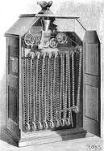

Curiosidades

1 En 1894 los quinetoscopios de Edison llegaron por primera vez a Europa; más concretamente a Francia. Dos años después, en 1896, presentó el vitascopio en Nueva York con la pretensión de reemplazar a los quinetoscopios y acercarse al cinematógrafo inventado por los hermanos Lumière.
2 Los aportes de Edison al mundo del cine también fueron muy importantes. En 1889 comercializó la película en celuloide en formato de 35 mm, aunque no la pudo patentar porque un tiempo antes George Eastman ya lo había hecho; aunque sí pudo patentar sus perforaciones laterales.
3 Por último, en 1897, Edison comenzará la llamada «guerra de patentes» con los hermanos Lumière respecto al invento de la primera máquina de cine.
4 Sus películas fueron también las primeras en obtener derechos de autor en el mundo. En 2022, una investigación documental de la Biblioteca del Congreso de Estados Unidos, descubrió la solicitud de registro de la película The Blacksmith Shop, conocida como La escena del herrero o La escena de la herrería, con fecha 14 de noviembre de 1893, la más antigua solicitud conocida. Después, el 9 de enero de 1894, registraría Edison Kinetoscopic Record of a Sneeze (conocida como El estornudo de Fred Ott).

5 Murió el 18 de octubre de 1931, en West Orange, Nueva Jersey. Como homenaje póstumo, fueron apagadas las luces de varias ciudades durante un minuto.
6 Es uno de los inventores más prolíficos de la historia: la obtención de su última patente, la 1093.ª, fue a sus 83 años.
7 Edison, confeso ser pacifista, se negó a diseñar armas ofensivas durante la Primera Guerra Mundial y se limitó a diseñar dispositivos de defensa, algo de lo cual siempre se enorgulleció.
8 Se lo ha acusado de antisemita en especial por su amistad con Henry Ford, quien lo era de modo manifiesto, sin embargo, si bien compartía algunos de los estereotipos respecto del judaísmo, comunes en los Estados Unidos de finales del siglo xix, y expresó comentarios prejuiciosos sobre los judíos, sin embargo, también se opuso a su persecución, promovió su emancipación y contrató numerosos judíos en su laboratorio.